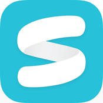

Clementine Conference Calls
Goal
The goal of redesigning the conference call flow (the “hero” feature of Clementine) was to build and sustain trust with customers throughout the entire call experience.
If they’ve tried different conference call apps, customers are aware of and likely accustomed to other apps that dial a conference line using a customer’s personal phone number. However, one of Clementine’s value propositions is that customers receive their own business line to keep their work and personal lives separate.
Prior to the redesign, Clementine’s conference call screen looked too similar to the iOS phone UI. Customers complained that they weren’t sure if calls were being made through Clementine or through their own phone, especially if they were distracted while using the app.
I planned to:
- Create a seamless Clementine-branded conference call experience that
- Would be flexible when incorporating additional call features we had on the horizon, such as call transferring, a dial pad, and conference rescheduling.
Competitor Analysis
The landscape of enterprise communication is far-reaching. There are apps that only do text-based communication (e.g., Slack, Pie), those that do text and voice (e.g., Convoi), and those that do voice through another product (e.g., UberConference, Hall).
I looked mainly at enterprise apps to get a sense how other products are handling phone calls, especially with multiple people on the line. I also took a look at more consumer-focused communication apps that might be handling a larger scale of customers.
-
Convoi
-
Hangouts
-
Messenger
-

Speakeasy
-
UberConference
-
Viber
General trends I found were that
- There’s a very limited number of tasks you can perform when you’re in a call. Many apps don’t let you return to the normal app UI.
- Not many apps made it clear who was in the call yet and who wasn’t.
- The ways in which you could start a conference call varied, but the majority of apps required you to start from a preexisting group, rather than with an ad hoc group.
Sketching
Blah
Mockups, Round 1
Blah
Prototyping, Round 1
blah
User Testing
Blah
Mockups & Prototyping, Round 2
blah
Final Design
Blah
Next Steps & Lessons Learned
Blah